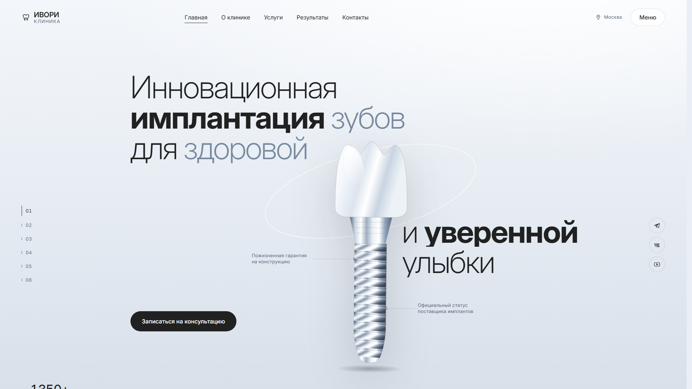
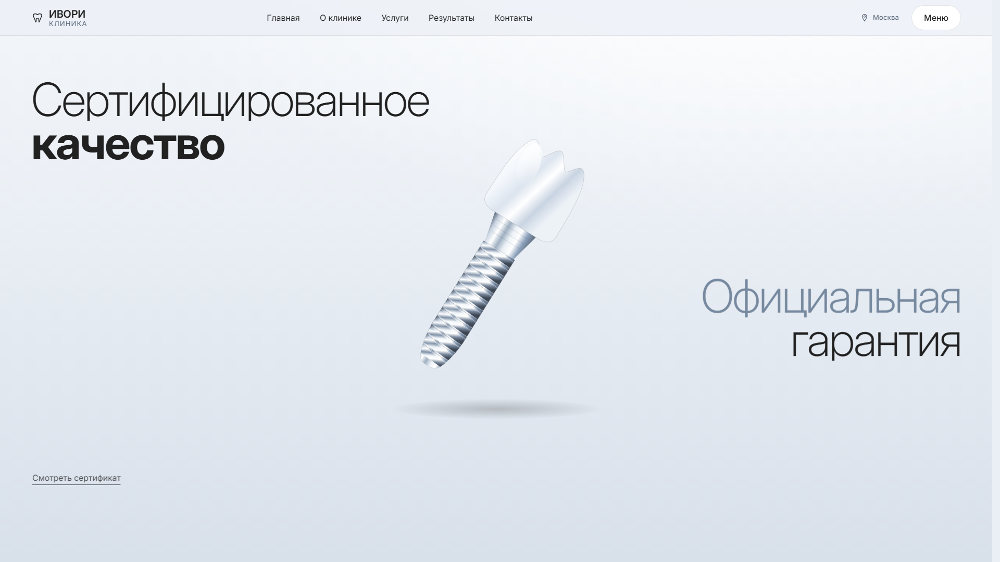
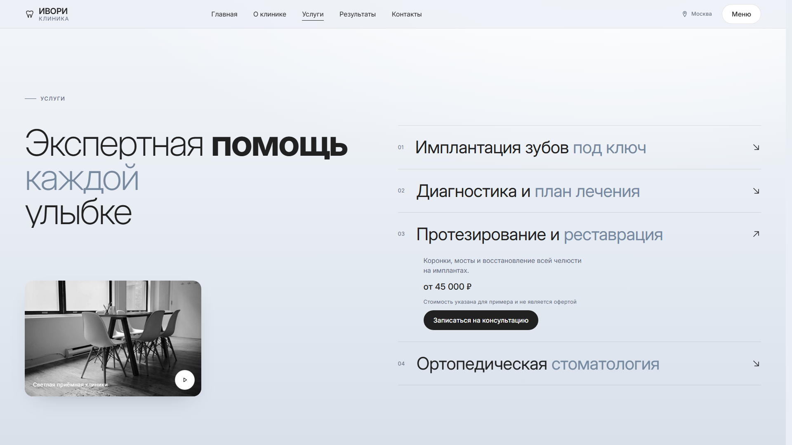

Кейс · лендинг медицинской клиники
ИВОРИ — лендинг стоматологии
Страница, где имплант разбирается на части по мере прокрутки. Без three.js, без GSAP, без единой библиотеки — вся анимация сведена к одному числу в CSS.
- 0библиотек в рантайме и ноль обращений к чужим доменам
- 10нативных ES-модулей вместо сборщика
- 1тикер анимации на всю страницу
- 6дефектов найдено ревью и закрыто до публикации
Задача
Взять сильный дизайн-концепт с Behance и сделать из него работающую страницу. Концепт — презентация: семь статичных слайдов, 3D-рендеры импланта из Cinema 4D, авторская сетка и палитра. Красиво, но кликнуть не по чему.
Отдельная сложность: в оригинале имплант — трёхмерная модель, которая разлетается на части. Тянуть ради этого three.js значило бы добавить к странице 170 КБ в сжатом виде — больше, чем весит всё остальное вместе взятое.

Разлёт на одном числе
Вместо 3D-сцены — SVG, у которого вся анимация управляется единственной
CSS-переменной --p на контейнере: от 0 (собран) до 1
(разобран). JavaScript считает прогресс прокрутки и пишет туда одно
число. Больше он не делает ничего.
Вся геометрия — коронка уходит вверх-вправо, винт вниз-влево, выноски включаются на порогах 0.30 / 0.45 / 0.60 / 0.75 — живёт в CSS и читается по наследованию. Заменить SVG на настоящий three.js можно, не трогая ни раскладку, ни движок анимации: точки подключения те же, меняется только то, что рисует картинку.

Один тикер вместо десяти слушателей
На странице шесть механизмов, зависящих от прокрутки: разлёт, параллакс,
появление блоков, состояние шапки, подсветка активного пункта меню,
счётчики. Обычно каждый вешает свой scroll-слушатель, и
браузер на каждый пиксель прокрутки дёргает их все.
Здесь во всём проекте ноль обработчиков scroll.
Есть один цикл на requestAnimationFrame, к которому
механизмы подписываются. Браузер получает одну точку входа вместо шести.
Ревью поймало на этом же месте дефект: в корень документа каждый кадр писалась переменная, которую не читал ни один файл проекта. Незарегистрированное свойство на корне заставляет браузер пересчитывать стиль всего дерева — 18.6 мс на кадр вместо 1.3. Удаление одной строки убрало разницу в четырнадцать раз.
Форма, которая утекала
Самая неприятная находка. У формы заявки не было ни action,
ни method — вся отправка висела на JavaScript. Пока скрипт
работает, всё честно: ни одного сетевого запроса, данные никуда не идут.
Но если скрипт не загрузился, браузер делает то, что положено по умолчанию: отправляет форму методом GET на текущий адрес. Имя и телефон человека уезжают в адресную строку — и оттуда в логи сервера, в историю браузера, в реферер. При этом страница в тот же момент уверяла посетителя, что никаких запросов не происходит.
Лечится одним атрибутом: method="dialog". Форма вне тега
<dialog> с таким методом при отправке не делает
ничего — ни запроса, ни перехода.
Сценарий редкий: у большинства посетителей JavaScript отработает. Но «редко» и «никогда» — разные вещи, а цена ошибки здесь — чужой номер телефона в чужих логах.
Где «крупный текст» не спасает
В палитре три ступени приглушённого серо-голубого. Самая светлая применялась только к словам в огромных заголовках — с логикой «чем крупнее буквы, тем светлее можно».
Логика неверная. Послабление для крупного текста опускает порог с 4.5 до 3:1, но не отменяет его. Замер: 2.21 — мимо даже стапятидесятипиксельного заголовка.
| Ступень | Где применяется | Было → стало |
|---|---|---|
| Светлая | слова в заголовках от 56 px | 2.21 → 3.10 |
| Средняя | подзаголовки 21–55 px | 3.15 |
| Тёмная | мелкий текст 13–20 px | 4.98 |
Светлее сделать нельзя: на этом фоне порог 3:1 упирается примерно
в #76899F. Это предел палитры, а не выбор вкуса — так и
записано в файле токенов, чтобы цвет не «вернули как было красивее».
Подпись поверх фотографии
Белая подпись лежала прямо на снимке. Низ кадра местами почти белый — в худшей точке контраст 1.3 при норме 4.5. Мягкая тень под текстом эту роль не выполняет: она размывается и в зачёт по нормам не идёт.
Добавил градиентное затемнение под подписью. Высоту задал в пикселях, а не в процентах: подпись прижата к низу на фиксированные 20 px, а сам кадр по брейкпоинтам меняет высоту с 190 до 490 px — от процента доля тёмного гуляла бы от 0.60 до 0.85. Проверял не на глаз, а по пикселям самого снимка: даже если однажды в этот слот положат абсолютно белую фотографию, под подписью останется 5.3:1.

Стек
Ни фреймворка, ни сборщика: семь файлов стилей, десять модулей, подключённых нативно. Шрифт лежит рядом со страницей, а не тянется с чужого CDN, — в рантайме страница не ходит ни на один сторонний домен. Открывается двойным кликом по локальному серверу и живёт на любом хостинге.
Работа учебная, не по заказу клиента. Клиника «ИВОРИ» вымышлена: телефон, адреса, цены, имена пациентов и лицензии — заведомо фиктивные, фотографии обезличенные, форма заявки никуда не отправляет данные. Интерфейс — реализация чужого дизайн-концепта: Dental Landing Page — Ivory Clinic, авторы макета Humeniakk Design и Kostya Kharytoniuk. Вёрстка, анимация разлёта, скриптовая часть и вся инженерия — мои.
Нужен сайт, который открывается мгновенно?
Страница без библиотек грузится быстрее, не ломается от обновления чужого пакета и не требует пересборки, чтобы поправить запятую. Расскажите, что нужно вашему делу, — соберу так же. Разбор бесплатный.